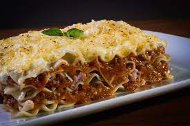

Lasagna

Description
This is a basic,flexible lasagna recipe.
Ingredients
- Two pounds of ground meat
- One small onion, minced
- 2 cloves of garlic
- 28 oz can of crushed tomatoes
- 12 oz of tomato paste
- 13 oz of tomato sauce
- Dried basil, fennel, oregano, thyme, crushed red pepper, black pepper, salt
- Fresh parsley
- 12 lasagna noodles
- 16 oz ricotta cheese
- 1 egg
- 1 lb mozzarella
- Grated parmesan
Steps
- Cook your meat and vegetables over medium heat until browned. Add in Tomatoes and water. Season to taste. You now have your sauce for the lasagna.
- Boil some water. Once the water is hot enough that it's beginning to boil, add a small amount of salt. Cook the lasagna noodles al dente.
- Preheat the oven to 365 degrees Fahrenheit. Mix together ricotta, egg, salt and parsley.
- Assemble in the pan. The bottom layer should be noodles, then a layer of sauce on top of that, then a layer of ricotta mixture.
- Cover with foil, not touching the food, then bake for 25 minutes. Remove the foil and bake for another 25 minutes. Do not burn yourself on the hot lasagna after removing from the oven.